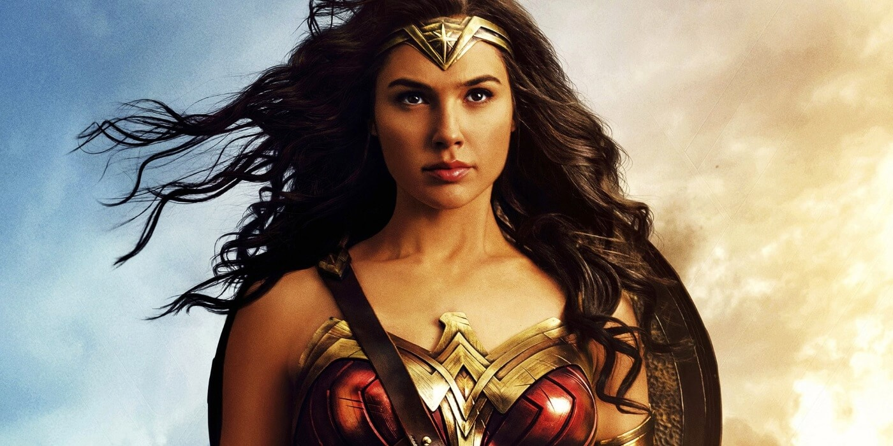
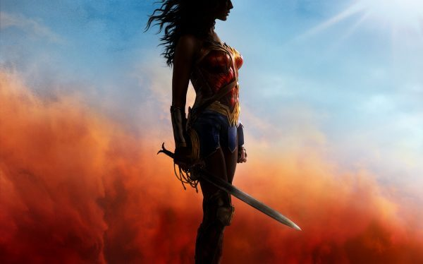
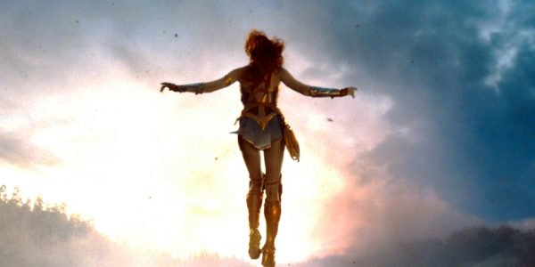
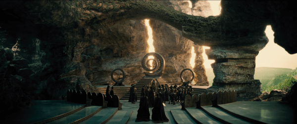

Quarto
GEEK
Início
Contato
Doações
GESHOP
Compre na nossa Loja
GEEK!!
Sobre
Saiba Mais
-Cinema-
Filmes em Gerais
Notícias e Curiosidades sobre o mundo dos filmes e cinemas
Thor Ragnarok
Trailer de Thor Ragnarok
Escrito por: C. Magno
Publicado em 21/10/2017
Confira o Trailer do tão aguardado Thor Ragnarok. O filme abordará, como já diz o título: O ragnarok, isto é, a morte de todos os deuses. E contará com o início de um novo arco do Hulk nos cinemas.
fonte:
QuartoGeek
Mulher Maravilha
Por que assistir Mulher Maravilha?
Escrito por: C. Magno
Publicado em 21/10/2017

Mulher Maravilha
(Wonder Woman, no original) é um filme americano lançado em 2017, baseado na "Princesa Diana"
(Mulher Maravilha)
da DC Comics. Sem dúvida um dos filmes mais esperados do ano, pensando nisso, confira agora alguns motivos para assistir ao filme!
Simplicidade

O filme se trata sobre a origem da "Mulher Maravilha", sendo também um enredo simples e inteligente. Não há perca de tempo em muitas cenas desnecessárias. E o filme consegue encurtar muito material em apenas alguns minutos de filme, sem que a trama se torne chata.
Mundo Fantástico

"Mulher Maravilha" introduz ao universo cinematográfico expandido da DC, toda uma nova gama de possibilidades e personagens, explicando a existência e influência dos deuses gregos naquele ambiente.
Referências
Um outro bom motivo para assistir ao filme, é devido ao fato do mesmo estar recheado de referências aos quadrinhos e à outros filmes. Isso torna a experiência do expectador muito mais agradável e de fato divertida.
Estética

Outro grande motivo, é a estética e recursos visuais empregados no filme. Com certeza o jogo de cores e movimentos no filme fizeram um ótimo trabalho para a construção da trama e imersão do público.
Bônus: Nova Abertura
A Warner acabou mudando a intro nos cinemas, e ficou simplesmente incrível. Relembrando muito bem as antigas aberturas das animações da DC. Vale a pena conferir.
fonte:
Fatos Desconhecidos